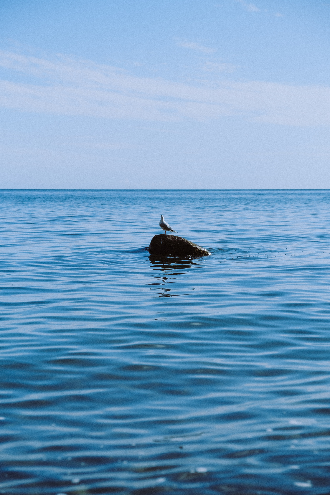

বঙ্গোপসাগরে মাছ ধরতে গিয়ে নিখোঁজের আট দিন পর ভোলার চরফ্যাশন উপজেলার ১৪ জেলের সন্ধান মিলেছে। গতকাল বুধবার বিকেলে ওই ফিশিং বোটের মাঝি মুঠোফোনে স্বজনদের সঙ্গে যোগাযোগ করেন। তাঁরা ১৪ জেলেকে নিয়ে ভোলার চরফ্যাশন উপজেলার দক্ষিণ আইচা থানার চরমানিকা ইউনিয়নের কচ্ছপিয়া মাছঘাটে ফিরে আসছেন বলে জানিয়েছেন। চরফ্যাশন উপজেলার জ্যেষ্ঠ মৎস্য কর্মকর্তা মারুফ হোসেন বিষয়টি প্রথম আলোকে নিশ্চিত করেছেন। তিনি বলেন, চরফ্যাশন উপজেলার ছয়টি ফিশিং বোট নিখোঁজ হয়েছিল। এর মধ্যে ৫টি ফিশিং বোটসহ ৮০ জন জেলে ঝড়ের কবলে পড়ে ডুবে যায়। এর মধ্যে ৭৮ জেলে সাঁতরে, অন্য জেলে ও ট্রলারের সাহায্যে উদ্ধার হয়। কিন্তু ট্রলারগুলো উদ্ধার করা সম্ভব হয়নি। ওই দুই জেলে এখনো নিখোঁজ।
